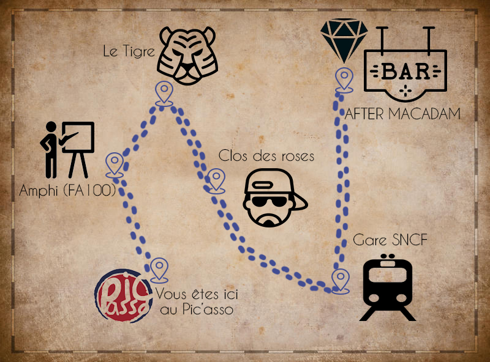

Vous fuyez sans vous faire remarquer jusqu'à une zone safe.
|

|
En versant de la Greygoose Youa sur la carte, des indices apparaissent !
On remarque que pour arriver jusqu'au diamant et ouvrir la porte du Macadam derrière laquelle il est caché, il vous reste 4 chiffres à obtenir.
Ces 4 chiffres sont cachés dans 4 endroits, et permettent de former le code d'entrée du Macadam.
L'amphi de MT90 est l'endroit le plus proche, foncez y !
|